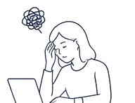
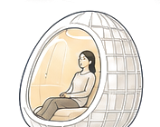
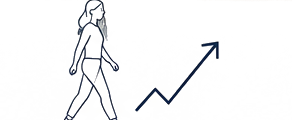

会議と会議の間
次の議題に入る前に、頭を切り替える20分。
会議室も、集中スペースも、増え続けている。
けれど、短い時間だけ一人になり、外部の刺激から離れて、
意図的に心と頭を整える場所は、まだほとんどない。

Azumayaは、外界の音や視線から一時的に離れ、 自分だけの空間で心と脳を整えるための パーソナル・リカバリー空間です。
軽量性を追求した網状構造が、人を包み込むパーソナル空間をつくる。
 スケールプロトタイプ（積層造形）
スケールプロトタイプ（積層造形）
面ではなく線でかたちをつくる網状フレームが、パネルを減らしながら十分な強度を確保します。
卵形のフレームが体をやわらかく囲み、外からの視線を感じにくい一人の空間をつくります。
音や光を穏やかに和らげる構造で、周囲の情報量を一時的に減らします。
長時間の滞在ではなく、20分という短い切り替えのために設計されています。
 技術図面 — 網状フレーム構造
技術図面 — 網状フレーム構造

疲労・情報過多

Azumayaに入る
20分間、整える

再び動き出す
日常の活動の中で、Azumayaに入る。それだけで、次に向かう準備が整います。
次の議題に入る前に、頭を切り替える20分。
午後の停滞を、短い回復でリセットする。
神経を使う作業のあと、一度、外界から離れる。
大事な仕事の前に、思考を整えてから臨む。
将来的には、こうした場所にも。


Azumayaが目指すのは、ポッドを売ることではありません。
働く場所に、学ぶ場所に、移動する場所に。
「回復するための空間」という、新しいインフラをつくることです。